Versão 0.6.12. Acabamento dos desenhos existentes, passadas preparadas e conexão do carrinho à mão. Células nativas de 96 × 96, sem mudança da escala do personagem no jogo. Aprovação artística final pendente da inspeção do usuário.
Em cada cartão, 0.6.11 acima e RV1 abaixo. Ordem: frente, esquerda, costas, direita. Clique em uma vista para compará-la na escala nativa e em 3×. O ritmo desta galeria serve à inspeção; no jogo, as ações seguem o servidor.
Pranchas: quatro fases antigas à esquerda e quatro revisadas à direita. Nas novas passadas, contato esquerdo, passagem, contato direito e passagem; lados anatômicos permanecem coerentes entre vistas.
A posição atual parte da mão e da extremidade da haste. Rodas mudam com a distância percorrida e mantêm a fase ao parar. Costas têm ordem de sobreposição própria. As animações abaixo mostram oito amostras para incluir ambas as posições da roda.
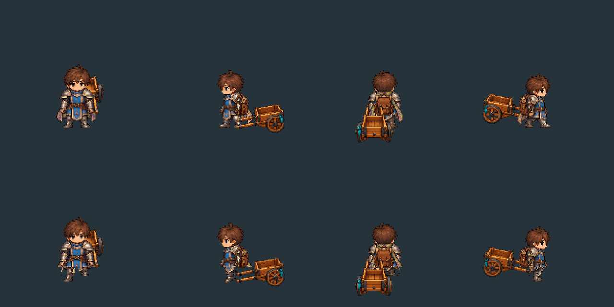
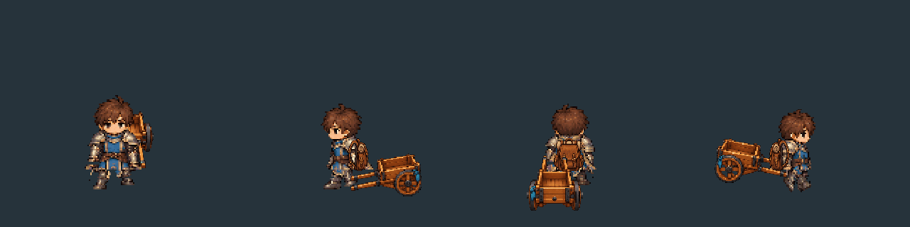
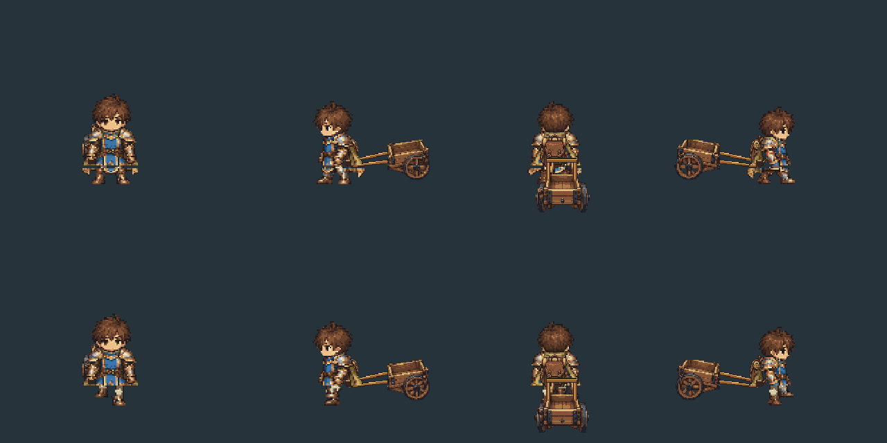
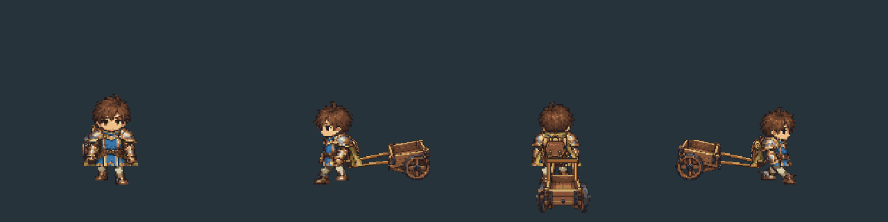
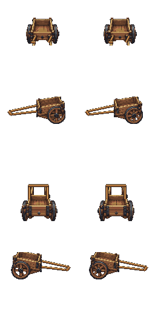
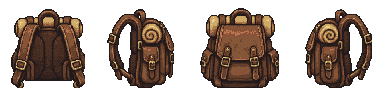
O lobo conserva pelagem, olhos e cicatriz; quatro fases deslocam patas dianteiras e traseiras. O cavaleiro recebe quatro apoios, reação apoiada e queda intermediária. Lobos comuns e slimes conservam seus desenhos e recebem separação entre preparação, execução e recuperação.
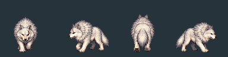
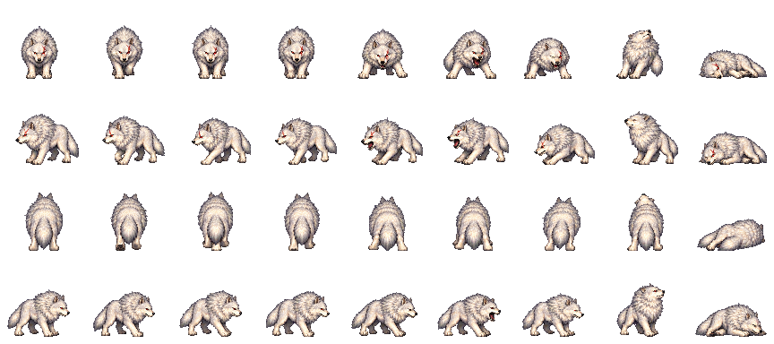
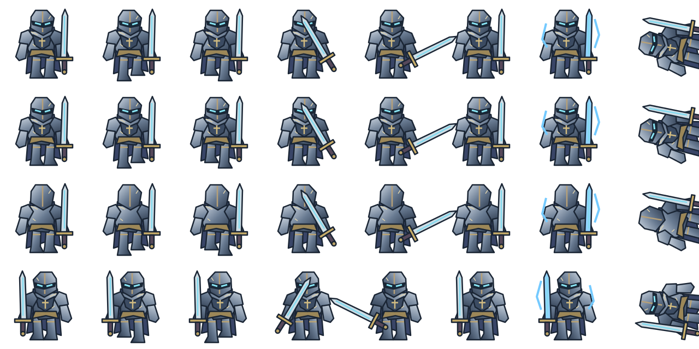
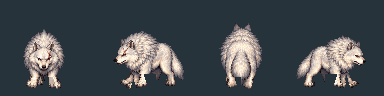
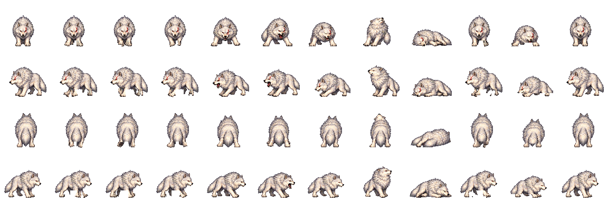
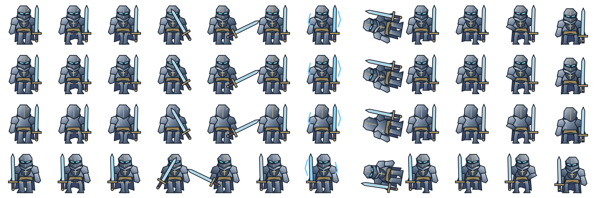
Mineração: preparar, mirar, golpe, retorno. Pesca: lançar, aguardar, fisgar e recolher. A seleção continua vinculada ao resultado real das atividades. Estes atlas não foram redesenhados nesta revisão.
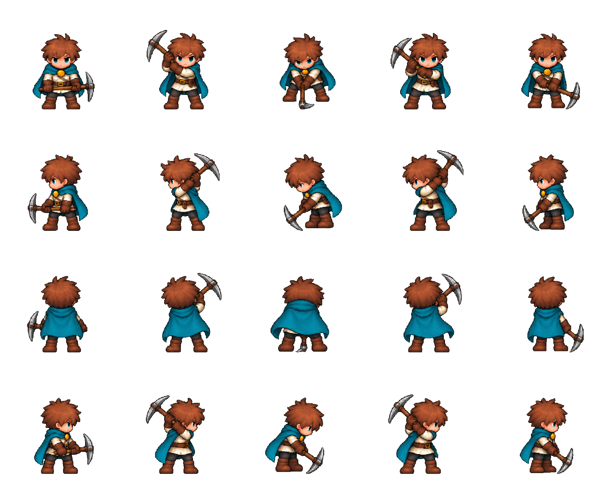
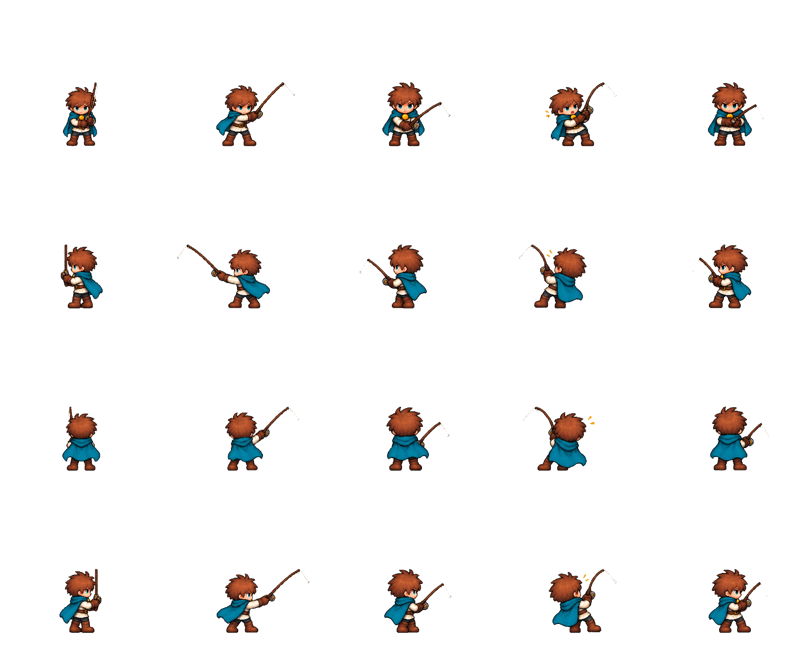
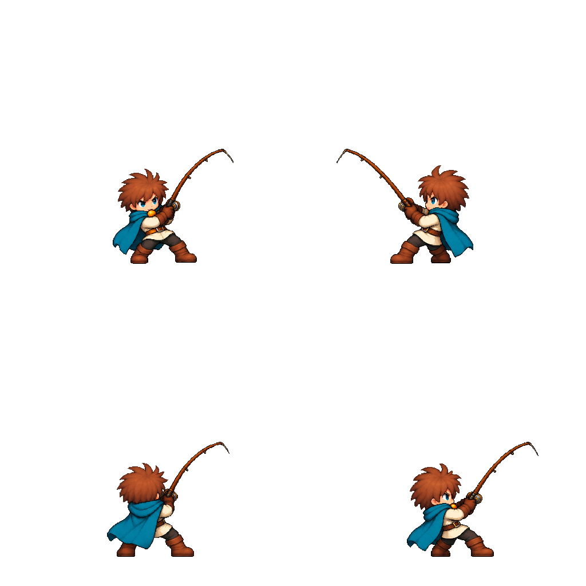
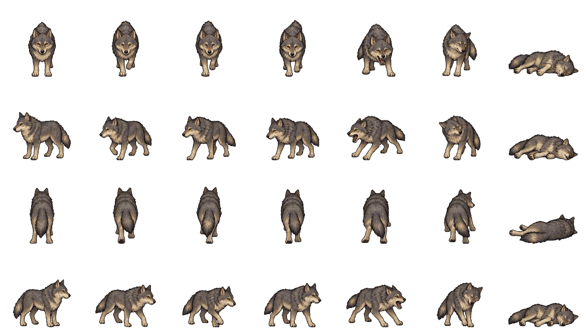
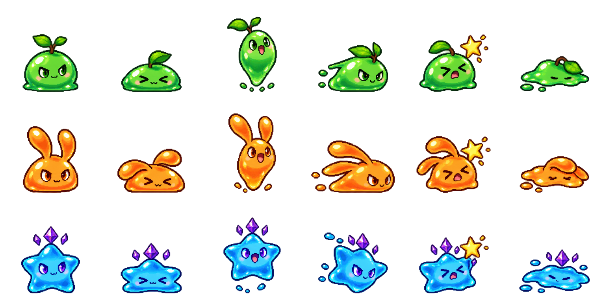
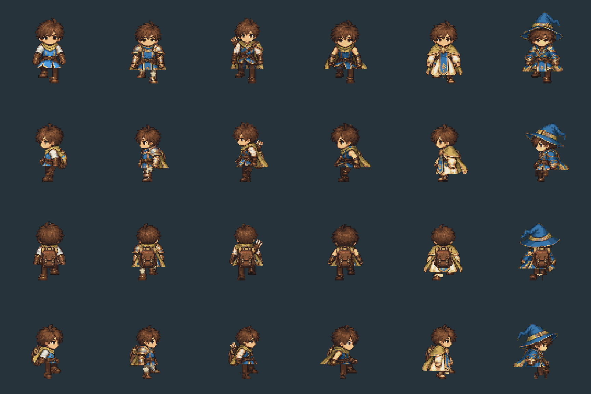
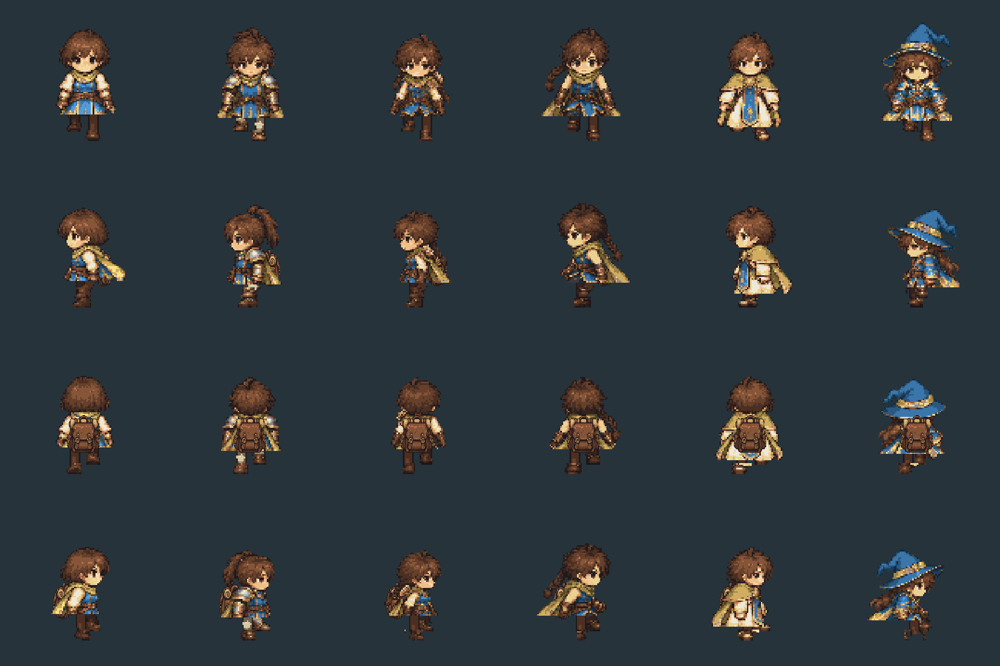
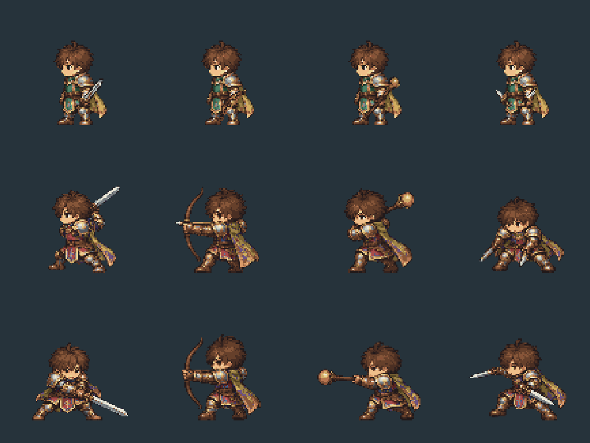
Perfis e bancos temporários. Capturas de impacto e morte identificadas no relatório usam condições isoladas de teste após a medição de desempenho.